Vollzitat:
"Straßenverkehrs-Ordnung vom 6. März 2013 (BGBl. I S. 367), die zuletzt durch Artikel 24 der Verordnung vom 11. Dezember 2024 (BGBl. 2024 I S. 411) geändert worden ist"
| Konstitutive Neufassung gem. V v. 6.3.2013 I 367, in Kraft getreten am 1.4.2013 | |
| Stand: | Zuletzt geändert durch Art. 24 V v. 11.12.2024 I 411 |
(+++ Textnachweis ab: 1.4.2013 +++)
(+++ Zur Anwendung vgl. § 52 +++)
(+++ Zur Nichtanwendung d. Anlage 3 Nr. 22 Nr. 2 vgl. § 10 Abs. 1 eKFV +++)
| 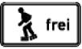 |
| 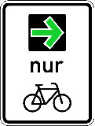 |
| wird der Grünpfeil auf den Radverkehr beschränkt. |
| 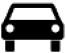 | 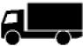 | 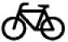 | 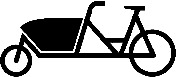 |
| Kraftwagen und sonstige mehrspurige Kraftfahrzeuge | Kraftfahrzeuge mit einer zulässigen Gesamtmasse über 3,5 t, einschließlich ihrer Anhänger, und Zugmaschinen, ausgenommen Personenkraftwagen und Kraftomnibusse | Radverkehr | Fahrrad zum Transport von Gütern oder Personen – Lastenfahrrad |
| 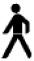 | 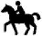 | 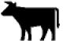 | |
| Fußgänger | Reiter | Viehtrieb | |
| 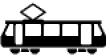 | 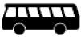 | 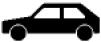 | 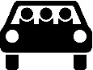 |
| Straßenbahn | Kraftomnibus | Personenkraftwagen | Personenkraftwagen oder Krafträder mit Beiwagen, die mit mindestens drei Personen besetzt sind – mehrfachbesetzte Personenkraftwagen |
| 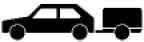 | 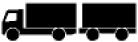 | 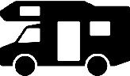 | 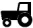 |
| Personenkraftwagen mit Anhänger | Lastkraftwagen mit Anhänger | Wohnmobil | Kraftfahrzeuge und Züge, die nicht schneller als 25 km/h fahren können oder dürfen |
| 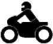 | 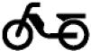 | 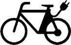 | 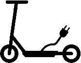 |
| Krafträder, auch mit Beiwagen, Kleinkrafträder und Mofas | Mofas | Einsitzige zweirädrige Kleinkrafträder mit elektrischem Antrieb, der sich auf eine bauartbedingte Geschwindigkeit von nicht mehr als 25 km/h selbsttätig abregelt – E-Bikes – | Elektrokleinstfahrzeug im Sinne der Elektrokleinstfahrzeuge-Verordnung (eKFV) |
| 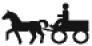 | |||
| Gespannfuhrwerke |
| 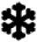 | 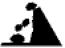 | 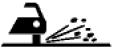 |
| Schnee- oder Eisglätte | Steinschlag | Splitt, Schotter |
| 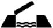 | 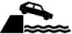 | 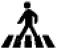 |
| Bewegliche Brücke | Ufer | Fußgängerüberweg |
| 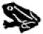 | 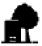 | 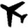 |
| Amphibienwanderung | Unzureichendes Lichtraumprofil | Flugbetrieb |
| 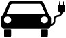 |
| 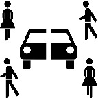 |
| Carsharing |
| 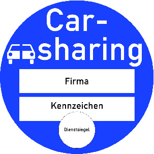 |
| deutlich sichtbar auf der Innenseite der Windschutzscheibe anzubringen ist. |
| 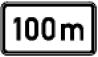 |
| 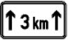 |
| 1 | 2 | 3 |
|---|---|---|
| lfd. Nr. | Zeichen | Erläuterungen |
| Abschnitt 1 Allgemeine Gefahrzeichen (zu § 40 Absatz 6) | ||
| 1 | Zeichen 101 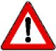 Gefahrstelle | Ein Zusatzzeichen kann die Gefahr näher bezeichnen. |
| 2 | Zeichen 102 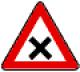 Kreuzung oder Einmündung | Kreuzung oder Einmündung mit Vorfahrt von rechts |
| 3 | Zeichen 103 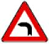 Kurve | |
| 4 | Zeichen 105 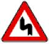 Doppelkurve | |
| 5 | Zeichen 108 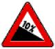 Gefälle | |
| 6 | Zeichen 110 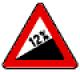 Steigung | |
| 7 | Zeichen 112 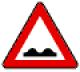 Unebene Fahrbahn | |
| 8 | Zeichen 114 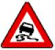 Schleuder- oder Rutschgefahr | Schleuder- oder Rutschgefahr bei Nässe oder Schmutz |
| 9 | Zeichen 117 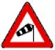 Seitenwind | |
| 10 | Zeichen 120 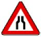 Verengte Fahrbahn | |
| 11 | Zeichen 121 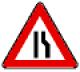 Einseitig verengte Fahrbahn | |
| 12 | Zeichen 123 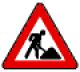 Arbeitsstelle | |
| 13 | Zeichen 124 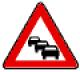 Stau | |
| 14 | Zeichen 125 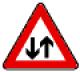 Gegenverkehr | |
| 15 | Zeichen 131 Lichtzeichenanlage | |
| 16 | Zeichen 133 Fußgänger | |
| 17 | Zeichen 136 Kinder | |
| 18 | Zeichen 138 Radverkehr | |
| 19 | Zeichen 142 Wildwechsel | |
| Abschnitt 2 Besondere Gefahrzeichen vor Übergängen von Schienenbahnen mit Vorrang (zu § 40 Absatz 7) | ||
| 20 | Zeichen 151 Bahnübergang | |
| 21 | Zeichen 156 Bahnübergang mit dreistreifiger Bake | Bahnübergang mit dreistreifiger Bake etwa 240 m vor dem Bahnübergang. Die Angabe erheblich abweichender Abstände kann an der dreistreifigen, zweistreifigen und einstreifigen Bake oberhalb der Schrägstreifen in schwarzen Ziffern erfolgen. |
| 22 | Zeichen 159 Zweistreifige Bake | Zweistreifige Bake etwa 160 m vor dem Bahnübergang |
| 23 | Zeichen 162 Einstreifige Bake | Einstreifige Bake etwa 80 m vor dem Bahnübergang |
| 1 | 2 | 3 |
|---|---|---|
| lfd. Nr. | Zeichen und Zusatzzeichen | Ge- oder Verbote Erläuterungen |
| Abschnitt 1 Wartegebote und Haltgebote | ||
| 1 | Zeichen 201 Andreaskreuz | Ge- oder Verbot
Das Zeichen (auch liegend) befindet sich vor dem Bahnübergang, in der Regel unmittelbar davor. Ein Blitzpfeil in der Mitte des Andreaskreuzes zeigt an, dass die Bahnstrecke eine Spannung führende Fahrleitung hat. |
| 2 | Zeichen 205 Vorfahrt gewähren. | Ge- oder Verbot
Das Zeichen steht unmittelbar vor der Kreuzung oder Einmündung. Es kann durch dasselbe Zeichen mit Zusatzzeichen, das die Entfernung angibt, angekündigt sein. |
| 2.1 | Ge- oder Verbot Ist das Zusatzzeichen zusammen mit dem Zeichen 205 angeordnet, bedeutet es: Wer ein Fahrzeug führt, muss Vorfahrt gewähren und dabei auf Radverkehr und Elektrokleinstfahrzeuge im Sinne der eKFV von links und rechts achten. Erläuterung Das Zusatzzeichen steht über dem Zeichen 205. | |
| 2.2 | Ge- oder Verbot Ist das Zusatzzeichen zusammen mit dem Zeichen 205 angeordnet, bedeutet es: Wer ein Fahrzeug führt, muss der Straßenbahn Vorfahrt gewähren. Erläuterung Das Zusatzzeichen steht über dem Zeichen 205. | |
| 3 | Zeichen 206 Halt. Vorfahrt gewähren. | Ge- oder Verbot
|
| 3.1 | Erläuterung Das Zusatzzeichen kündigt zusammen mit dem Zeichen 205 das Haltgebot in der angegebenen Entfernung an. | |
| 3.2 | Ge- oder Verbot Ist das Zusatzzeichen zusammen mit dem Zeichen 206 angeordnet, bedeutet es: Wer ein Fahrzeug führt, muss anhalten und Vorfahrt gewähren und dabei auf Radverkehr und Elektrokleinstfahrzeuge im Sinne der eKFV von links und rechts achten. Erläuterung Das Zusatzzeichen steht über dem Zeichen 206. | |
| Zu 2 und 3 | Erläuterung Das Zusatzzeichen gibt zusammen mit den Zeichen 205 oder 206 den Verlauf der Vorfahrtstraße (abknickende Vorfahrt) bekannt. | |
| 4 | Zeichen 208 Vorrang des Gegenverkehrs | Ge- oder Verbot Wer ein Fahrzeug führt, hat dem Gegenverkehr Vorrang zu gewähren. |
| Abschnitt 2 Vorgeschriebene Fahrtrichtungen | ||
| zu 5 bis 7 | Ge- oder Verbot Wer ein Fahrzeug führt, muss der vorgeschriebenen Fahrtrichtung folgen. Erläuterung Andere als die dargestellten Fahrtrichtungen werden entsprechend vorgeschrieben. Auf Anlage 2 laufende Nummer 70 wird hingewiesen. | |
| 5 | Zeichen 209 Rechts | |
| 6 | Zeichen 211 Hier rechts | |
| 7 | Zeichen 214 Geradeaus oder rechts | |
| 8 | Zeichen 215 Kreisverkehr | Ge- oder Verbot
|
| 9 | Zeichen 220 Einbahnstraße | Ge- oder Verbot Wer ein Fahrzeug führt, darf die Einbahnstraße nur in Richtung des Pfeils befahren. Erläuterung Das Zeichen schreibt für den Fahrzeugverkehr auf der Fahrbahn die Fahrtrichtung vor. |
| 9.1 | Ge- oder Verbot Ist Zeichen 220 mit diesem Zusatzzeichen angeordnet, bedeutet dies: Wer ein Fahrzeug führt, muss beim Einbiegen und im Verlauf einer Einbahnstraße auf Radverkehr und Elektrokleinstfahrzeuge im Sinne der eKFV entgegen der Fahrtrichtung achten. Erläuterung Das Zusatzzeichen zeigt an, dass Radverkehr in der Gegenrichtung zugelassen ist. Beim Vorbeifahren an einer für den gegenläufigen Radverkehr freigegebenen Einbahnstraße bleibt gegenüber dem ausfahrenden Radfahrer der Grundsatz, dass Vorfahrt hat, wer von rechts kommt (§ 8 Absatz 1 Satz 1) unberührt. Dies gilt auch für den ausfahrenden Radverkehr. Mündet eine Einbahnstraße für den gegenläufig zugelassenen Radverkehr in eine Vorfahrtstraße, steht für den aus der Einbahnstraße ausfahrenden Radverkehr das Zeichen 205. | |
| Abschnitt 3 Vorgeschriebene Vorbeifahrt | ||
| 10 | Zeichen 222 Rechts vorbei | Ge- oder Verbot Wer ein Fahrzeug führt, muss der vorgeschriebenen Vorbeifahrt folgen. Erläuterung „Links vorbei“ wird entsprechend vorgeschrieben. |
| Abschnitt 4 Seitenstreifen als Fahrstreifen, Haltestellen und Taxenstände | ||
| Zu 11 bis 13 | Erläuterung Wird das Zeichen 223.1, 223.2 oder 223.3 für eine Fahrbahn mit mehr als zwei Fahrstreifen angeordnet, zeigen die Zeichen die entsprechende Anzahl der Pfeile. | |
| 11 | Zeichen 223.1 Seitenstreifen befahren | Ge- oder Verbot Das Zeichen gibt den Seitenstreifen als Fahrstreifen frei; dieser ist wie ein rechter Fahrstreifen zu befahren. |
| 11.1 | Erläuterung Das Zeichen 223.1 mit dem Zusatzzeichen kündigt die Aufhebung der Anordnung an. | |
| 12 | Zeichen 223.2 Seitenstreifen nicht mehr befahren | Ge- oder Verbot Das Zeichen hebt die Freigabe des Seitenstreifens als Fahrstreifen auf. |
| 13 | Zeichen 223.3 Seitenstreifen räumen | Ge- oder Verbot Das Zeichen ordnet die Räumung des Seitenstreifens an. |
| 14 | Zeichen 224 Haltestelle | Ge- oder Verbot Wer ein Fahrzeug führt, darf bis zu 15 m vor und hinter dem Zeichen nicht parken. Erläuterung Das Zeichen kennzeichnet eine Haltestelle des Linienverkehrs und für Schulbusse. Das Zeichen mit dem Zusatzzeichen „Schulbus“ (Angabe der tageszeitlichen Benutzung) auf einer gemeinsamen weißen Trägerfläche kennzeichnet eine Haltestelle nur für Schulbusse. |
| 15 | Zeichen 229 Taxenstand | Ge- oder Verbot Wer ein Fahrzeug führt, darf an Taxenständen nicht halten, ausgenommen sind für die Fahrgastbeförderung bereitgehaltene Taxen. Erläuterung Die Länge des Taxenstandes wird durch die Angabe der Zahl der vorgesehenen Taxen oder das am Anfang der Strecke aufgestellte Zeichen mit einem zur Fahrbahn weisenden waagerechten weißen Pfeil und durch ein am Ende aufgestelltes Zeichen mit einem solchen von der Fahrbahn wegweisenden Pfeil oder durch eine Grenzmarkierung für Halt- und Parkverbote (Zeichen 299) gekennzeichnet. |
| 15.1 | Zeichen 230 Ladebereich | Ge- oder Verbot
Erläuterung Die Länge des Ladebereichs wird durch das am Anfang der Strecke aufgestellte Zeichen mit einem zur Fahrbahn weisenden waagerechten weißen Pfeil und durch ein am Ende aufgestelltes Zeichen mit einem solchen von der Fahrbahn wegweisenden Pfeil oder durch Markierung gekennzeichnet. |
| Abschnitt 5 Sonderwege | ||
| 16 | Zeichen 237 Radweg | Ge- oder Verbot
|
| 17 | Zeichen 238 Reitweg | Ge- oder Verbot
|
| 18 | Zeichen 239 Gehweg | Ge- oder Verbot
Das Zeichen kennzeichnet einen Gehweg (§ 25 Absatz 1 Satz 1), wo eine Klarstellung notwendig ist. |
| 19 | Zeichen 240 Gemeinsamer Geh- und Radweg | Ge- oder Verbot
Das Zeichen kennzeichnet auch den Gehweg (§ 25 Absatz 1 Satz 1). |
| 20 | Zeichen 241 Getrennter Rad- und Gehweg | Ge- oder Verbot
Das Zeichen kennzeichnet auch den Gehweg (§ 25 Absatz 1 Satz 1). |
| 21 | Zeichen 242.1 Beginn einer Fußgängerzone | Ge- oder Verbot
|
| 22 | Zeichen 242.2 Ende einer Fußgängerzone | |
| 23 | Zeichen 244.1 Beginn einer Fahrradstraße | Ge- oder Verbot
|
| 24 | Zeichen 244.2 Ende einer Fahrradstraße | |
| 24.1 | Zeichen 244.3 Beginn einer Fahrradzone | Ge- oder Verbot
|
| 24.2 | Zeichen 244.4 Ende einer Fahrradzone | |
| 25 | Zeichen 245 Bussonderfahrstreifen | Ge- oder Verbot
|
| 25.1 | Ge- oder Verbot | |
| Mit diesem Zusatzzeichen sind elektrisch betriebene Fahrzeuge auf dem Bussonderfahrstreifen zugelassen. | ||
| Abschnitt 6 Verkehrsverbote | ||
| 26 | Ge- oder Verbot Die nachfolgenden Zeichen 250 bis 261 (Verkehrsverbote) untersagen die Verkehrsteilnahme ganz oder teilweise mit dem angegebenen Inhalt. | |
| Erläuterung Für die Zeichen 250 bis 259 gilt:
| ||
| 27 | Ge- oder Verbot Ist auf einem Zusatzzeichen eine Masse, wie „7,5 t“, angegeben, gilt das Verbot nur, soweit die zulässige Gesamtmasse dieser Verkehrsmittel einschließlich ihrer Anhänger die angegebene Grenze überschreitet. | |
| 27.1 |  | Ge- oder Verbot |
| Mit diesem Zusatzzeichen sind elektrisch betriebene Fahrzeuge von Verkehrsverboten (Zeichen 250, 251, 253, 255, 260) ausgenommen. | ||
| 28 | Zeichen 250 Verbot für Fahrzeuge aller Art | Ge- oder Verbot
|
| 29 | Zeichen 251 Verbot für Kraftwagen | Ge- oder Verbot Verbot für Kraftwagen und sonstige mehrspurige Kraftfahrzeuge |
| 30 | Zeichen 253 Verbot für Kraftfahrzeuge über 3,5 t | Ge- oder Verbot Verbot für Kraftfahrzeuge mit einer zulässigen Gesamtmasse über 3,5 t, einschließlich ihrer Anhänger, und für Zugmaschinen. Ausgenommen sind Personenkraftwagen und Kraftomnibusse. Erläuterung Das Zeichen kann in einer Überleitungstafel oder in einer Verschwenkungstafel oder in einer Fahrstreifentafel integriert sein. Dann bezieht sich das Verbot nur auf den jeweiligen Fahrstreifen, für den das Verbot angeordnet ist. |
| 30.1 | Ge- oder Verbot Wird Zeichen 253 mit diesen Zusatzzeichen angeordnet, bedeutet dies:
| |
Diese Kombination ist nur mit Zeichen 253 zulässig. | ||
| 31 | Zeichen 254 Verbot für Radverkehr | Ge- oder Verbot Verbot für den Radverkehr und den Verkehr mit Elektrokleinstfahrzeugen im Sinne der eKFV |
| 32 | Zeichen 255 Verbot für Krafträder | Ge- oder Verbot Verbot für Krafträder, auch mit Beiwagen, Kleinkrafträder und Mofas |
| 33 | Zeichen 259 Verbot für Fußgänger | Ge- oder Verbot Verbot für den Fußgängerverkehr |
| 34 | Zeichen 260 Verbot für Kraftfahrzeuge | Ge- oder Verbot Verbot für Krafträder, auch mit Beiwagen, Kleinkrafträder und Mofas sowie für Kraftwagen und sonstige mehrspurige Kraftfahrzeuge |
| 35 | Zeichen 261 Verbot für kennzeichnungspflichtige Kraftfahrzeuge mit gefährlichen Gütern | Ge- oder Verbot Verbot für kennzeichnungspflichtige Kraftfahrzeuge mit gefährlichen Gütern |
| zu 36 bis 40 | Ge- oder Verbot Die nachfolgenden Zeichen 262 bis 266 verbieten die Verkehrsteilnahme für Fahrzeuge, deren Maße oder Massen, einschließlich Ladung, eine auf dem jeweiligen Zeichen angegebene tatsächliche Grenze überschreiten. Erläuterung Die angegebenen Grenzen stellen nur Beispiele dar. | |
| 36 | Zeichen 262 Tatsächliche Masse | Ge- oder Verbot Die Beschränkung durch Zeichen 262 gilt bei Fahrzeugkombinationen für das einzelne Fahrzeug, bei Sattelkraftfahrzeugen gesondert für die Sattelzugmaschine einschließlich Sattellast und für die tatsächlich vorhandenen Achslasten des Sattelanhängers. Erläuterung Das Zeichen kann in einer Überleitungstafel oder in einer Verschwenkungstafel oder in einer Fahrstreifentafel integriert sein. Dann bezieht sich das Verbot nur auf den jeweiligen Fahrstreifen, für den das Verbot angeordnet ist. |
| 37 | Zeichen 263 Tatsächliche Achslast | Erläuterung Das Zeichen kann in einer Überleitungstafel oder in einer Verschwenkungstafel oder in einer Fahrstreifentafel integriert sein. Dann bezieht sich das Verbot nur auf den jeweiligen Fahrstreifen, für den das Verbot angeordnet ist. |
| 38 | Zeichen 264 Tatsächliche Breite | Erläuterung Die tatsächliche Breite gibt das Maß einschließlich der Fahrzeugaußenspiegel an. Das Zeichen kann in einer Überleitungstafel oder in einer Verschwenkungstafel oder in einer Fahrstreifentafel integriert sein. Dann bezieht sich das Verbot nur auf den jeweiligen Fahrstreifen, für den das Verbot angeordnet ist. |
| 39 | Zeichen 265 Tatsächliche Höhe | Erläuterung Das Zeichen kann in einer Überleitungstafel oder in einer Verschwenkungstafel oder in einer Fahrstreifentafel integriert sein. Dann bezieht sich das Verbot nur auf den jeweiligen Fahrstreifen, für den das Verbot angeordnet ist. |
| 40 | Zeichen 266 Tatsächliche Länge | Ge- oder Verbot Das Verbot gilt bei Fahrzeugkombinationen für die Gesamtlänge. |
| 41 | Zeichen 267 Verbot der Einfahrt | Ge- oder Verbot Wer ein Fahrzeug führt, darf nicht in die Fahrbahn einfahren, für die das Zeichen angeordnet ist. Erläuterung Das Zeichen steht auf der rechten Seite der Fahrbahn, für die es gilt, oder auf beiden Seiten dieser Fahrbahn. |
| 41.1 | Ge- oder Verbot Durch das Zusatzzeichen zu dem Zeichen 267 ist die Einfahrt für den Radverkehr und Elektrokleinstfahrzeuge im Sinne der eKFV zugelassen. | |
| 42 | Zeichen 268 Schneeketten vorgeschrieben | Ge- oder Verbot Wer ein Fahrzeug führt, darf die Straße nur mit Schneeketten befahren. |
| 43 | Zeichen 269 Verbot für Fahrzeuge mit wassergefährdender Ladung | Ge- oder Verbot Wer ein Fahrzeug führt, darf die Straße mit mehr als 20 l wassergefährdender Ladung nicht benutzen. |
| 44 | Zeichen 270.1 Beginn einer Verkehrsverbotszone zur Verminderung schädlicher Luftverunreinigungen in einer Zone | Ge- oder Verbot
Die Umweltzone ist zur Vermeidung von schädlichen Umwelteinwirkungen durch Luftverunreinigungen in einem Luftreinhalteplan oder einem Plan für kurzfristig zu ergreifende Maßnahmen nach § 47 Absatz 1 oder 2 des Bundes-Immissionsschutzgesetzes festgesetzt und auf Grund des § 40 Absatz 1 des Bundes-Immissionsschutzgesetzes angeordnet. Die Kennzeichnung der Umweltzone erfolgt auf Grund von § 45 Absatz 1f. |
| 45 | Zeichen 270.2 Ende einer Verkehrsverbotszone zur Verminderung schädlicher Luftverunreinigungen in einer Zone | |
| 46 | Freistellung vom Verkehrsverbot nach § 40 Absatz 1 des Bundes-Immissionsschutzgesetzes | Ge- oder Verbot Das Zusatzzeichen zum Zeichen 270.1 nimmt Kraftfahrzeuge vom Verkehrsverbot aus, die mit einer auf dem Zusatzzeichen in der jeweiligen Farbe angezeigten Plakette nach § 3 der Verordnung zur Kennzeichnung der Kraftfahrzeuge mit geringem Beitrag zur Schadstoffbelastung ausgestattet sind. |
| 47 | Zeichen 272 Verbot des Wendens | Ge- oder Verbot Wer ein Fahrzeug führt, darf hier nicht wenden. |
| 48 | Zeichen 273 Verbot des Unterschreitens des angegebenen Mindestabstandes | Ge- oder Verbot Wer ein Kraftfahrzeug mit einer zulässigen Gesamtmasse über 3,5 t oder eine Zugmaschine führt, darf den angegebenen Mindestabstand zu einem vorausfahrenden Kraftfahrzeug gleicher Art nicht unterschreiten. Personenkraftwagen und Kraftomnibusse sind ausgenommen. |
| Abschnitt 7 Geschwindigkeitsbeschränkungen und Überholverbote | ||
| 49 | Zeichen 274 Zulässige Höchstgeschwindigkeit | Ge- oder Verbot
Erläuterung Das Zeichen kann in einer Fahrstreifentafel oder einer Einengungstafel oder einer Aufweitungstafel integriert sein. Dann bezieht sich die zulässige Höchstgeschwindigkeit nur auf den jeweiligen Fahrstreifen, für den die Höchstgeschwindigkeit angeordnet ist. |
| 49.1 | Ge- oder Verbot Das Zusatzzeichen zu dem Zeichen 274 verbietet Fahrzeugführenden, bei nasser Fahrbahn die angegebene Geschwindigkeit zu überschreiten. | |
| 50 | Zeichen 274.1 Beginn einer Tempo 30-Zone | Ge- oder Verbot Wer ein Fahrzeug führt, darf innerhalb dieser Zone nicht schneller als mit der angegebenen Höchstgeschwindigkeit fahren. Erläuterung Mit dem Zeichen können in verkehrsberuhigten Geschäftsbereichen auch Zonengeschwindigkeitsbeschränkungen von weniger als 30 km/h angeordnet sein. |
| 51 | Zeichen 274.2 Ende einer Tempo 30-Zone | |
| 52 | Zeichen 275 Vorgeschriebene Mindestgeschwindigkeit | Ge- oder Verbot Wer ein Fahrzeug führt, darf nicht langsamer als mit der angegebenen Mindestgeschwindigkeit fahren, sofern nicht Straßen-, Verkehrs-, Sicht- oder Wetterverhältnisse dazu verpflichten. Es verbietet, mit Fahrzeugen, die nicht so schnell fahren können oder dürfen, einen so gekennzeichneten Fahrstreifen zu benutzen. Erläuterung Das Zeichen kann in einer Fahrstreifentafel oder einer Aufweitungstafel integriert sein. Dann bezieht sich die vorgeschriebene Mindestgeschwindigkeit nur auf den jeweiligen Fahrstreifen, für den die Mindestgeschwindigkeit angeordnet ist. |
| Zu 53, 54 und 54.4 | Ge- oder Verbot Die nachfolgenden Zeichen 276 und 277 verbieten Kraftfahrzeugen das Überholen von mehrspurigen Kraftfahrzeugen und Krafträdern mit Beiwagen. Ist auf einem Zusatzzeichen eine Masse, wie „7,5 t“ angegeben, gilt das Verbot nur, soweit die zulässige Gesamtmasse dieser Kraftfahrzeuge, einschließlich ihrer Anhänger, die angegebene Grenze überschreitet. Soll mehrspurigen Kraftfahrzeugen und Krafträdern mit Beiwagen das Überholen von einspurigen Fahrzeugen verboten werden, ist Zeichen 277.1 angeordnet. | |
| 53 | Zeichen 276 Überholverbot für Kraftfahrzeuge aller Art | |
| 54 | Zeichen 277 Überholverbot für Kraftfahrzeuge über 3,5 t | Ge- oder Verbot Überholverbot für Kraftfahrzeuge mit einer zulässigen Gesamtmasse über 3,5 t, einschließlich ihrer Anhänger, und für Zugmaschinen. Ausgenommen sind Personenkraftwagen und Kraftomnibusse. |
| 54.1 | Ge- oder Verbot Mit dem Zusatzzeichen gilt das durch Zeichen 277 angeordnete Überholverbot auch für Kraftfahrzeuge über 2,8 t, einschließlich ihrer Anhänger. | |
| 54.2 | Ge- oder Verbot Mit dem Zusatzzeichen gilt das durch Zeichen 277 angeordnete Überholverbot auch für Kraftomnibusse und Personenkraftwagen mit Anhänger. | |
| 54.3 | Erläuterung Das Zusatzzeichen zu dem Zeichen 274, 276, 277 oder 277.1 gibt die Länge einer Geschwindigkeitsbeschränkung oder eines Überholverbots an. | |
| 54.4 | Zeichen 277.1 Verbot des Überholens von einspurigen Fahrzeugen für mehrspurige Kraftfahrzeuge und Krafträder mit Beiwagen | Ge- oder Verbot Wer ein mehrspuriges Kraftfahrzeug führt, darf ein- und mehrspurige Fahrzeuge nicht überholen. |
| 55 | Erläuterung Das Ende einer streckenbezogenen Geschwindigkeitsbeschränkung oder eines Überholverbots ist nicht gekennzeichnet, wenn das Verbot nur für eine kurze Strecke gilt und auf einem Zusatzzeichen die Länge des Verbots angegeben ist. Es ist auch nicht gekennzeichnet, wenn das Verbotszeichen zusammen mit einem Gefahrzeichen angebracht ist und sich aus der Örtlichkeit zweifelsfrei ergibt, von wo an die angezeigte Gefahr nicht mehr besteht. Sonst ist es gekennzeichnet durch die Zeichen 278 bis 282. | |
| 56 | Zeichen 278 Ende der zulässigen Höchstgeschwindigkeit | Erläuterung Das Zeichen kann in einer Fahrstreifentafel oder einer Einengungstafel oder Aufweitungstafel integriert sein. Dann bezieht sich das Zeichen nur auf den jeweiligen Fahrstreifen, für den die zulässige Höchstgeschwindigkeit vorher angeordnet worden war. |
| 57 | Zeichen 279 Ende der vorgeschriebenen Mindestgeschwindigkeit | Erläuterung Das Zeichen kann in einer Fahrstreifentafel oder einer Einengungstafel integriert sein. Dann bezieht sich das Zeichen nur auf den jeweiligen Fahrstreifen, für den die vorgeschriebene Mindestgeschwindigkeit vorher angeordnet worden war. |
| 58 | Zeichen 280 Ende des Überholverbots für Kraftfahrzeuge aller Art | |
| 59 | Zeichen 281 Ende des Überholverbots für Kraftfahrzeuge über 3,5 t | |
| 59.1 | Zeichen 281.1 Ende des Verbots des Überholens von einspurigen Fahrzeugen für mehrspurige Kraftfahrzeuge und Krafträder mit Beiwagen | |
| 60 | Zeichen 282 Ende sämtlicher streckenbezogener Geschwindigkeitsbeschränkungen und Überholverbote | Erläuterung Das Zeichen kann in einer Fahrstreifentafel oder einer Aufweitungstafel integriert sein. Dann bezieht sich das Zeichen nur auf den jeweiligen Fahrstreifen, für den die streckenbezogenen Geschwindigkeitsbeschränkungen und Überholverbote vorher angeordnet worden waren. |
| Abschnitt 8 Halt- und Parkverbote | ||
| 61 | Ge- oder Verbot
Der Anfang der Verbotsstrecke kann durch einen zur Fahrbahn weisenden waagerechten weißen Pfeil im Zeichen, das Ende durch einen solchen von der Fahrbahn wegweisenden Pfeil gekennzeichnet sein. Bei in der Verbotsstrecke wiederholten Zeichen weist eine Pfeilspitze zur Fahrbahn, die zweite Pfeilspitze von ihr weg. | |
| 62 | Zeichen 283 Absolutes Haltverbot | Ge- oder Verbot Das Halten auf der Fahrbahn ist verboten. |
| 62.1 | Ge- oder Verbot Das mit dem Zeichen 283 angeordnete Zusatzzeichen verbietet das Halten von Fahrzeugen auch auf dem Seitenstreifen. | |
| 62.2 | Ge- oder Verbot Das mit dem Zeichen 283 angeordnete Zusatzzeichen verbietet das Halten von Fahrzeugen nur auf dem Seitenstreifen. | |
| 63 | Zeichen 286 Eingeschränktes Haltverbot | Ge- oder Verbot
|
| 63.1 |  | Ge- oder Verbot Mit dem Zusatzzeichen zu Zeichen 286 darf auch auf dem Seitenstreifen nicht länger als drei Minuten gehalten werden, ausgenommen zum Ein- oder Aussteigen oder zum Be- oder Entladen. |
| 63.2 | Ge- oder Verbot Mit dem Zusatzzeichen zu Zeichen 286 darf nur auf dem Seitenstreifen nicht länger als drei Minuten gehalten werden, ausgenommen zum Ein- oder Aussteigen oder zum Be- oder Entladen. | |
| 63.3 | Ge- oder Verbot
| |
| 63.4 | Ge- oder Verbot
| |
| 63.5 |  | Ge- oder Verbot |
| Durch das Zusatzzeichen zu Zeichen 286 wird das Parken für elektrisch betriebene Fahrzeuge innerhalb der gekennzeichneten Flächen erlaubt. | ||
| 63.6 |  | Ge- oder Verbot Durch das Zusatzzeichen zu Zeichen 286 wird das Parken für Carsharingfahrzeuge (§ 39 Absatz 11) innerhalb der gekennzeichneten Flächen erlaubt. |
| 64 | Zeichen 290.1 Beginn eines Eingeschränkten Haltverbots für eine Zone | Ge- oder Verbot
|
| 64.1 |  | Ge- oder Verbot |
| Durch das Zusatzzeichen zu Zeichen 290.1 wird das Parken für elektrisch betriebene Fahrzeuge innerhalb der gekennzeichneten Flächen erlaubt. | ||
| 64.2 | Ge- oder Verbot Durch das Zusatzzeichen zu Zeichen 290.1 wird das Parken für Carsharingfahrzeuge (§ 39 Absatz 11) innerhalb der gekennzeichneten Flächen erlaubt. | |
| 65 | Zeichen 290.2 Ende eines eingeschränkten Haltverbots für eine Zone | |
| Abschnitt 9 Markierungen | ||
| 66 | Zeichen 293 Fußgängerüberweg | Ge- oder Verbot Wer ein Fahrzeug führt, darf auf Fußgängerüberwegen sowie bis zu 5 m davor nicht halten. |
| 67 | Zeichen 294 Haltlinie | Ge- oder Verbot Ergänzend zu Halt- oder Wartegeboten, die durch Zeichen 206, durch Polizeibeamte, Lichtzeichen oder Schranken gegeben werden, ordnet sie an: Wer ein Fahrzeug führt, muss hier anhalten. Erforderlichenfalls ist an der Stelle, wo die Straße eingesehen werden kann, in die eingefahren werden soll (Sichtlinie), erneut anzuhalten. |
| 68 | Zeichen 295 Fahrstreifenbegrenzung, Begrenzung von Fahrbahnen und Sonderwegen | Ge- oder Verbot
|
| 69 | Zeichen 296 Fahrstreifen B Fahrstreifen A Einseitige Fahrstreifenbegrenzung | Ge- oder Verbot
|
| 70 | Zeichen 297 Pfeilmarkierungen | Ge- oder Verbot
Pfeile empfehlen, sich rechtzeitig einzuordnen und in Fahrstreifen nebeneinander zu fahren. Fahrzeuge, die sich eingeordnet haben, dürfen auch rechts überholt werden. |
| 71 | Zeichen 297.1 Vorankündigungspfeil | Erläuterung Mit dem Vorankündigungspfeil wird eine Fahrstreifenbegrenzung angekündigt oder das Ende eines Fahrstreifens angezeigt. Die Ausführung des Pfeils kann von der gezeigten abweichen. |
| 72 | Zeichen 298 Sperrfläche | Ge- oder Verbot Wer ein Fahrzeug führt, darf Sperrflächen nicht benutzen. |
| 73 | Zeichen 299 Grenzmarkierung für Halt- oder Parkverbote | Ge- oder Verbot Wer ein Fahrzeug führt, darf innerhalb einer Grenzmarkierung für Halt- oder Parkverbote nicht halten oder parken. Erläuterung Grenzmarkierungen bezeichnen, verlängern oder verkürzen ein an anderer Stelle vorgeschriebenes Halt- oder Parkverbot. |
| 74 | Parkflächenmarkierung | Ge- oder Verbot Eine Parkflächenmarkierung erlaubt das Parken; auf Gehwegen aber nur Fahrzeugen mit einer zulässigen Gesamtmasse bis zu 2,8 t. Die durch die Parkflächenmarkierung angeordnete Aufstellung ist einzuhalten. Wo sie mit durchgehenden Linien markiert ist, darf diese überfahren werden. Erläuterung Sind Parkflächen auf Straßen erkennbar abgegrenzt, wird damit angeordnet, wie Fahrzeuge aufzustellen sind. |
| 1 | 2 | 3 |
|---|---|---|
| lfd. Nr. | Zeichen und Zusatzzeichen | Ge- oder Verbote Erläuterungen |
| Abschnitt 1 Vorrangzeichen | ||
| 1 | Zeichen 301 Vorfahrt | Ge- oder Verbot Das Zeichen zeigt an, dass an der nächsten Kreuzung oder Einmündung Vorfahrt besteht. |
| 2 | Zeichen 306 Vorfahrtstraße | Ge- oder Verbot Wer ein Fahrzeug führt, darf außerhalb geschlossener Ortschaften auf Fahrbahnen von Vorfahrtstraßen nicht parken. Das Zeichen zeigt an, dass Vorfahrt besteht bis zum nächsten Zeichen 205 „Vorfahrt gewähren.“, 206 „Halt. Vorfahrt gewähren.“ oder 307 „Ende der Vorfahrtstraße“. |
| 2.1 | Ge- oder Verbot
Das Zusatzzeichen zum Zeichen 306 zeigt den Verlauf der Vorfahrtstraße an. | |
| 3 | Zeichen 307 Ende der Vorfahrtstraße | |
| 4 | Zeichen 308 Vorrang vor dem Gegenverkehr | Ge- oder Verbot Wer ein Fahrzeug führt, hat Vorrang vor dem Gegenverkehr. |
| Abschnitt 2 Ortstafel | ||
| zu 5 und 6 | Erläuterung Ab der Ortstafel gelten jeweils die für den Verkehr innerhalb oder außerhalb geschlossener Ortschaften bestehenden Vorschriften. | |
| 5 | Zeichen 310 Ortstafel Vorderseite | Die Ortstafel bestimmt: Hier beginnt eine geschlossene Ortschaft. |
| 6 | Zeichen 311 Ortstafel Rückseite | Die Ortstafel bestimmt: Hier endet eine geschlossene Ortschaft. |
| Abschnitt 3 Parken | ||
| 7 | Zeichen 314 Parken | Ge- oder Verbot
|
| 8 | Zeichen 314.1 Beginn einer Parkraumbewirtschaftungszone | Ge- oder Verbot
Die Art der Parkbeschränkung wird durch Zusatzzeichen angezeigt. |
| 9 | Zeichen 314.2 Ende einer Parkraumbewirtschaftungszone | |
| 10 | Zeichen 315 Parken auf Gehwegen | Ge- oder Verbot
|
| 11 | Bild 318 Parkscheibe | Ge- oder Verbot Ist die Parkzeit bei elektrisch betriebenen Fahrzeugen beschränkt, so ist der Nachweis durch Auslegen der Parkscheibe zu erbringen. |
| Abschnitt 4 Verkehrsberuhigter Bereich | ||
| 12 | Zeichen 325.1 Beginn eines verkehrsberuhigten Bereichs | Ge- oder Verbot
|
| 13 | Zeichen 325.2 Ende eines verkehrsberuhigten Bereichs | Erläuterung Beim Ausfahren ist § 10 zu beachten. |
| Abschnitt 5 Tunnel | ||
| 14 | Zeichen 327 Tunnel | Ge- oder Verbote
|
| Abschnitt 6 Nothalte- und Pannenbucht | ||
| 15 | Zeichen 328 Nothalte- und Pannenbucht | Ge- oder Verbot Wer ein Fahrzeug führt, darf nur im Notfall oder bei einer Panne in einer Nothalte- und Pannenbucht halten. |
| Abschnitt 7 Autobahnen und Kraftfahrstraßen | ||
| 16 | Zeichen 330.1 Autobahn | Erläuterung Ab diesem Zeichen gelten die Regeln für den Verkehr auf Autobahnen. |
| 17 | Zeichen 330.2 Ende der Autobahn | |
| 18 | Zeichen 331.1 Kraftfahrstraße | Erläuterung Ab diesem Zeichen gelten die Regeln für den Verkehr auf Kraftfahrstraßen. |
| 19 | Zeichen 331.2 Ende der Kraftfahrstraße | |
| 20 | Zeichen 333 Ausfahrt von der Autobahn | Erläuterung Auf Kraftfahrstraßen oder autobahnähnlich ausgebauten Straßen weist das entsprechende Zeichen mit schwarzer Schrift auf gelbem Grund auf die Ausfahrt hin. Das Zeichen kann auch auf weißem Grund ausgeführt sein. |
| 21 | Zeichen 450 Ankündigungsbake | Erläuterung Das Zeichen steht 300 m, 200 m (wie abgebildet) und 100 m vor einem Autobahnknotenpunkt (Autobahnanschlussstelle, Autobahnkreuz oder Autobahndreieck). Es steht auch vor einer bewirtschafteten Rastanlage. Vor einem Knotenpunkt kann auf der 300 m-Bake die Nummer des Knotenpunktes angezeigt sein. |
| Abschnitt 8 Markierungen | ||
| 22 | Zeichen 340 Leitlinie | Ge- oder Verbot
Der Schutzstreifen für den Radverkehr ist in regelmäßigen Abständen mit dem Sinnbild „Radverkehr“ auf der Fahrbahn gekennzeichnet. |
| 23 | Zeichen 341 Wartelinie | Erläuterung Die Wartelinie empfiehlt dem Wartepflichtigen, an dieser Stelle zu warten. |
| 23.1 | Zeichen 342 Haifischzähne | Erläuterung Die Markierung hebt eine Wartepflicht infolge einer bestehenden Rechts-vor-links-Regelung abseits der Bundes-, Landes- und Kreisstraßen sowie weiterer Hauptverkehrsstraßen und eine durch Zeichen 205 oder 206 angeordnete Vorfahrtberechtigung des Radverkehrs im Zuge von Kreuzungen oder Einmündungen von Radschnellwegen hervor. Im Fall dieser Vorfahrtberechtigung des Radverkehrs sind die Markierungen auf beiden Seiten entlang der Fahrbahnkanten des Radschnellwegs mit den Spitzen in Richtung des wartepflichtigen Verkehrs anzuordnen. |
| Abschnitt 9 Hinweise | ||
| 24 | Zeichen 350 Fußgängerüberweg | |
| 24.1 | Zeichen 350.1 Radschnellweg | Erläuterung Das Zeichen steht an Radschnellwegen. Es dient der Unterrichtung über den Beginn von Radschnellwegen und der Führung von Radschnellwegen an Knotenpunkten. |
| 24.2 | Zeichen 350.2 Ende des Radschnellwegs | |
| 25 | Zeichen 354 Wasserschutzgebiet | |
| 26 | Zeichen 356 Verkehrshelfer | |
| 27 | Zeichen 357 Sackgasse | Erläuterung Im oberen Teil des Verkehrszeichens kann die Durchlässigkeit der Sackgasse für den Radverkehr und/oder Fußgängerverkehr durch Piktogramme angezeigt sein. |
| zu 28 und 29 | Erläuterung
| |
| 28 | Zeichen 358 Erste Hilfe | |
| 29 | Zeichen 363 Polizei | |
| 30 | Zeichen 385 Ortshinweistafel | |
| zu 31 und 32 | Erläuterung Die Zeichen stehen außerhalb von Autobahnen. Sie dienen dem Hinweis auf touristisch bedeutsame Ziele und der Kennzeichnung des Verlaufs touristischer Routen. Sie können auch als Wegweiser ausgeführt sein. | |
| 31 | Zeichen 386.1 Touristischer Hinweis | |
| 32 | Zeichen 386.2 Touristische Route | |
| 33 | Zeichen 386.3 Touristische Unterrichtungstafel | Erläuterung Das Zeichen steht an der Autobahn. Es dient der Unterrichtung über touristisch bedeutsame Ziele. |
| 34 | Zeichen 390 Mautpflicht nach dem Bundesfernstraßenmautgesetz | |
| 35 | Zeichen 391 Mautpflichtige Strecke | |
| 36 | Zeichen 392 Zollstelle | |
| 37 | Zeichen 393 Informationstafel an Grenzübergangsstellen | |
| 38 | Zeichen 394 Laternenring | Erläuterung Das Zeichen kennzeichnet innerhalb geschlossener Ortschaften Laternen, die nicht die ganze Nacht leuchten. In dem roten Feld kann in weißer Schrift angegeben sein, wann die Laterne erlischt. |
| Abschnitt 10 Wegweisung | ||
| 1. Nummernschilder | ||
| 39 | Zeichen 401 Bundesstraßen | |
| 40 | Zeichen 405 Autobahnen | |
| 41 | Zeichen 406 Knotenpunkte der Autobahnen | Erläuterung So sind Knotenpunkte der Autobahnen (Autobahnausfahrten, Autobahnkreuze und Autobahndreiecke) beziffert. |
| 42 | Zeichen 410 Europastraßen | |
| 2. Wegweiser außerhalb von Autobahnen | ||
| a) Vorwegweiser | ||
| 43 | Zeichen 438 | |
| 44 | Zeichen 439 | |
| 45 | Zeichen 440 | |
| 46 | Zeichen 441 | |
| b) Pfeilwegweiser | ||
| zu 47 bis 49 | Erläuterung Das Zusatzzeichen „Nebenstrecke“ oder der Zusatz „Nebenstrecke“ im Wegweiser weist auf eine Straßenverbindung von untergeordneter Bedeutung hin. | |
| 47 | Zeichen 415 | Erläuterung Pfeilwegweiser auf Bundesstraßen |
| 48 | Zeichen 418 | Erläuterung Pfeilwegweiser auf sonstigen Straßen |
| 49 | Zeichen 419 | Erläuterung Pfeilwegweiser auf sonstigen Straßen mit geringerer Verkehrsbedeutung |
| 50 | Zeichen 430 | Erläuterung Pfeilwegweiser zur Autobahn |
| 51 | Zeichen 432 | Erläuterung Pfeilwegweiser zu Zielen mit erheblicher Verkehrsbedeutung. |
| c) Tabellenwegweiser | ||
| 52 | Zeichen 434 | Erläuterung Der Tabellenwegweiser kann auch auf einer Tafel zusammengefasst sein. Die Zielangaben in einer Richtung können auch auf separaten Tafeln gezeigt werden. |
| d) Ausfahrttafel | ||
| 53 | Zeichen 332.1 | Erläuterung Ausfahrt von der Kraftfahrstraße oder einer autobahnähnlich ausgebauten Straße. Das Zeichen kann innerhalb geschlossener Ortschaften auch mit weißem Grund ausgeführt sein. |
| e) Straßennamensschilder | ||
| 54 | Zeichen 437 | Erläuterung Das Zeichen hat entweder weiße Schrift auf dunklem Grund oder schwarze Schrift auf hellem Grund. Es kann auch an Bauwerken angebracht sein. |
| 3. Wegweiser auf Autobahnen | ||
| a) Ankündigungstafeln | ||
| zu 55 und 58 | Erläuterung Die Nummer (Zeichen 406) ist die laufende Nummer der Autobahnausfahrten, Autobahnkreuze und Autobahndreiecke der gerade befahrenen Autobahn. Sie dient der besseren Orientierung. | |
| 55 | Zeichen 448 | Erläuterung Das Zeichen weist auf eine Autobahnausfahrt, ein Autobahnkreuz oder Autobahndreieck hin. Es schließt Zeichen 406 ein. |
| 56 | Erläuterung Das Sinnbild weist auf eine Ausfahrt hin. | |
| 57 | Erläuterung Das Sinnbild weist auf ein Autobahnkreuz oder Autobahndreieck hin; es weist auch auf Kreuze und Dreiecke von Autobahnen mit autobahnähnlich ausgebauten Straßen des nachgeordneten Netzes hin. | |
| 58 | Zeichen 448.1 | Erläuterung
|
| b) Vorwegweiser | ||
| 59 | Zeichen 449 | |
| c) Ausfahrttafel | ||
| 60 | Zeichen 332 | |
| d) Entfernungstafel | ||
| 61 | Zeichen 453 | Erläuterung Die Entfernungstafel gibt Fernziele und die Entfernung zur jeweiligen Ortsmitte an. Ziele, die über eine andere als die gerade befahrene Autobahn zu erreichen sind, werden unterhalb des waagerechten Striches angegeben. |
| Abschnitt 11 Umleitungsbeschilderung | ||
| 1. Umleitung außerhalb von Autobahnen | ||
| a) Umleitungen für bestimmte Verkehrsarten | ||
| 62 | Zeichen 442 Vorwegweiser | Erläuterung Vorwegweiser für bestimmte Verkehrsarten |
| 63 | Zeichen 421 | Erläuterung Pfeilwegweiser für bestimmte Verkehrsarten |
| 64 | Zeichen 422 | Erläuterung Wegweiser für bestimmte Verkehrsarten |
| b) Temporäre Umleitungen (z. B. infolge von Baumaßnahmen) | ||
| 65 | Erläuterung Der Verlauf der Umleitungsstrecke kann gekennzeichnet werden durch | |
| 66 | Zeichen 454 | Erläuterung Umleitungswegweiser oder |
| 67 | Zeichen 455.1 | Erläuterung Fortsetzung der Umleitung |
| zu 66 und 67 | Erläuterung Die Zeichen 454 und 455.1 können durch eine Zielangabe auf einem Schild über den Zeichen ergänzt sein. Werden nur bestimmte Verkehrsarten umgeleitet, sind diese auf einem Zusatzzeichen über dem Zeichen angegeben. | |
| 68 | Erläuterung Die temporäre Umleitung kann angekündigt sein durch Zeichen 455.1 oder | |
| 69 | Zeichen 457.1 | Erläuterung Umleitungsankündigung |
| 70 | Erläuterung jedoch nur mit Entfernungsangabe auf einem Zusatzzeichen und bei Bedarf mit Zielangabe auf einem zusätzlichen Schild über dem Zeichen. Soll die Ankündigung nur für bestimmte Verkehrsarten gelten, sind diese auf einem Zusatzzeichen über dem Zeichen angegeben. | |
| 71 | Erläuterung Die Ankündigung kann auch erfolgen durch | |
| 72 | Zeichen 458 | Erläuterung eine Planskizze |
| 73 | Erläuterung Das Ende der Umleitung kann angezeigt werden durch | |
| 74 | Zeichen 457.2 | Erläuterung Ende der Umleitung oder |
| 75 | Zeichen 455.2 | Erläuterung Ende der Umleitung |
| 2. Bedarfsumleitung für den Autobahnverkehr | ||
| 76 | Zeichen 460 Bedarfsumleitung | Erläuterung Das Zeichen kennzeichnet eine alternative Streckenführung im nachgeordneten Straßennetz zwischen Autobahnanschlussstellen. |
| 77 | Zeichen 466 Weiterführende Bedarfsumleitung | Erläuterung Kann der umgeleitete Verkehr an der nach Zeichen 460 vorgesehenen Anschlussstelle noch nicht auf die Autobahn zurückgeleitet werden, wird er durch dieses Zeichen über die nächste Bedarfsumleitung weitergeführt. |
| Abschnitt 12 Sonstige Verkehrsführung | ||
| 1. Umlenkungspfeil | ||
| 78 | Zeichen 467.1 Umlenkungspfeil | Erläuterung Das Zeichen kennzeichnet Alternativstrecken auf Autobahnen, deren Benutzung im Bedarfsfall empfohlen wird (Streckenempfehlung). |
| 79 | Zeichen 467.2 | Erläuterung Das Zeichen kennzeichnet das Ende einer Streckenempfehlung. |
| 2. Verkehrslenkungstafeln | ||
| 80 | Erläuterung Verkehrslenkungstafeln geben den Verlauf und die Anzahl der Fahrstreifen an, wie beispielsweise: | |
| 81 | Zeichen 501 Überleitungstafel | Erläuterung Das Zeichen kündigt die Überleitung des Verkehrs auf die Gegenfahrbahn an. |
| 82 | Zeichen 531 Einengungstafel | |
| 82.1 | Erläuterung Bei Einengungstafeln wird mit dem Zusatzzeichen der Ort angekündigt, an dem der Fahrstreifenwechsel nach dem Reißverschlussverfahren (§ 7 Absatz 4) erfolgen soll. | |
| 3. Blockumfahrung | ||
| 83 | Zeichen 590 Blockumfahrung | Erläuterung Das Zeichen kündigt eine durch die Zeichen „Vorgeschriebene Fahrtrichtung“ (Zeichen 209 bis 214) vorgegebene Verkehrsführung an. |
| 1 | 2 | 3 | |
|---|---|---|---|
| lfd. Nr. | Zeichen | Ge- oder Verbot Erläuterungen | |
| Abschnitt 1 Einrichtungen zur Kennzeichnung von Arbeits- und Unfallstellen oder sonstigen vorübergehenden Hindernissen | |||
| 1 | Zeichen 600 Absperrschranke | ||
| 2 | Zeichen 605 | ||
| Leitbake | |||
| Pfeilbake | Schraffenbake | ||
| 3 | Zeichen 628 | ||
| Leitschwelle | |||
| mit Pfeilbake | mit Schraffenbake | ||
| 4 | Zeichen 629 | ||
| Leitbord | |||
| mit Pfeilbake | mit Schraffenbake | ||
| 5 | Zeichen 610 Leitkegel | ||
| 6 | Zeichen 615 Fahrbare Absperrtafel | ||
| 7 | Zeichen 616 Fahrbare Absperrtafel mit Blinkpfeil | ||
| zu 1 bis 7 | Ge- oder Verbot Die Einrichtungen verbieten das Befahren der so gekennzeichneten Straßenfläche und leiten den Verkehr an dieser Fläche vorbei. Erläuterung
| ||
| Abschnitt 2 Einrichtungen zur Kennzeichnung von dauerhaften Hindernissen oder sonstigen gefährlichen Stellen | |||
| 8 | Zeichen 625 Richtungstafel in Kurven | Die Richtungstafel in Kurven kann auch in aufgelöster Form angebracht sein. | |
| 9 | Zeichen 626 Leitplatte | ||
| 10 | Zeichen 627 Leitmal | Leitmale kennzeichnen in der Regel den Verkehr einschränkende Gegenstände. Ihre Ausführung richtet sich nach der senkrechten, waagerechten oder gewölbten Anbringung beispielsweise an Bauwerken, Bauteilen und Gerüsten. | |
| Abschnitt 3 Einrichtung zur Kennzeichnung des Straßenverlaufs | |||
| 11 | Zeichen 620 Leitpfosten (links) (rechts) | Um den Verlauf der Straße kenntlich zu machen, können an den Straßenseiten Leitpfosten in der Regel im Abstand von 50 m und in Kurven verdichtet stehen. | |
| Abschnitt 4 Warntafel zur Kennzeichnung von Fahrzeugen und Anhängern bei Dunkelheit | |||
| 12 | Zeichen 630 Parkwarntafel | ||